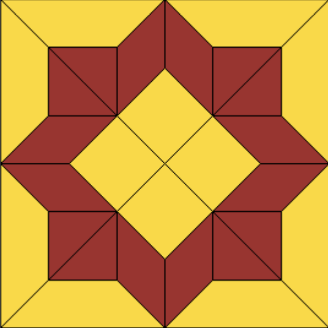

Zastosowanie praktyczne – Sterowanie „robotem”. Biblioteka turtle.
Wymagana wiedza
- Podstawy składni Python: zmienne oraz pętle for i while.
- Intuicja sterowania robotem za pomocą prostych komend (z lekcji 0).
- Podstawy geometrii (rozumienie kątów w figurach płaskich).
Treści z podstawy programowej
| Dział | Sekcja |
|---|---|
| II. Programowanie i rozwiązywanie problemów z wykorzystaniem komputera i innych urządzeń cyfrowych. Uczeń: | |
| 1) W programach stosuje: instrukcje wejścia/wyjścia, wyrażenia arytmetyczne i logiczne, instrukcje warunkowe, instrukcje iteracyjne, funkcje oraz zmienne i tablice. | |
| 2) Projektuje, tworzy i testuje oprogramowanie sterujące robotem lub innym obiektem na ekranie lub w rzeczywistości. | |
| I. Rozumienie, analizowanie i rozwiązywanie problemów. Uczeń: | |
| 1) Formułuje problem w postaci specyfikacji (czyli opisuje dane i wyniki) i wyróżnia kroki w algorytmicznym rozwiązywaniu problemów. | |
| IV. Rozwijanie kompetencji społecznych. Uczeń: | |
| 1) bierze udział w różnych formach współpracy, jak: (...) realizacja projektów (...) tworzy i prezentuje efekty wspólnej pracy |
Wstęp teoretyczny (przewidziany na około 10 minut)
Na pierwszej lekcji bawiliśmy się w sterowanie „wirtualnym robotem” na kartce papieru. Dziś ten robot ożyje na ekranie dzięki bibliotece turtle (po angielsku: żółw). Jest to wbudowany moduł Pythona służący do grafiki, która pozwala rysować kształty poprzez wydawanie prostych poleceń tekstowych.
Żółw to obiekt, który posiada "ogon" działający jak pisak – kiedy się porusza, zostawia ślad na ekranie. Takie podejście uczy nas, że programowanie to cały proces: od specyfikacji problemu (co chcemy narysować), przez opracowanie rozwiązania, aż po testowanie i poprawianie błędów w kodzie.
Informatyka „unplugged” – Powtórka z robota (5 minut)
Przypomnijmy sobie zadanie z kwadratem z lekcji 0. Gdybyś miał zapisać instrukcję narysowania trójkąta równobocznego, o jaki kąt musiałby obrócić się robot, aby po narysowaniu boku „zakręcić” do następnego?
Wskazówka: Robot musi obrócić się o kąt zewnętrzny figury. Dla kwadratu było to 90 stopni. Dla trójkąta będzie to 120 stopni.
Wspólne eksperymenty z biblioteką turtle (20 minut)
Aby zacząć, musimy zaimportować bibliotekę i stworzyć naszego "robota":
from turtle import *
zolw = Turtle() # Tworzymy naszego żółwia
shape("turtle") # Zmieniamy kształt kursora na żółwia
forward(100) # Idź naprzód o 100 kroków
right(90) # Obróć się w prawo o 90 stopni
color("blue") # Zmień kolor pisaka
circle(50) # Narysuj koło
Zadania do rozwiązania na komputerze (przewidziane na około 65 minut)
Podczas pracy nad zadaniami projektuj, twórz i testuj swoje programy, dbając o ich czytelność.
- Kwadrat: Napisz program, który narysuje kwadrat o boku 150. Wykorzystaj pętlę
for i in range(4), aby uniknąć powtarzania tych samych komend. - Trójkąt: Napisz program, który narysuje trójkąt równoboczny o boku 150.
- Wielokąt: Napisz funkcję rysuj_wielokat(n, bok), która narysuje wielokąt o
nbokach. Pamiętaj, że kąt obrotu to zawsze360 / n. - Kolorowa gwiazda: Narysuj gwiazdę pięcioramienną (kąt obrotu 144 stopnie). Niech każde ramię ma inny kolor.
- Zadanie z konkursu miniLOGIA 16: Napisz funkcję
posadzka(n), która po wywołaniu narysuje kafelek posadzki o bokuni kształcie jak na rysunku poniżej:
